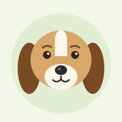

Beagle
- Size
- Small. About 33–41 cm tall and 9–11 kg.
- Personality
- Cheerful, curious and a little stubborn. Loves company and follows its nose everywhere.
- Everyday care
- Two walks a day, a quick brush each week, and a well-fenced yard. Beagles will happily wander off after a smell.